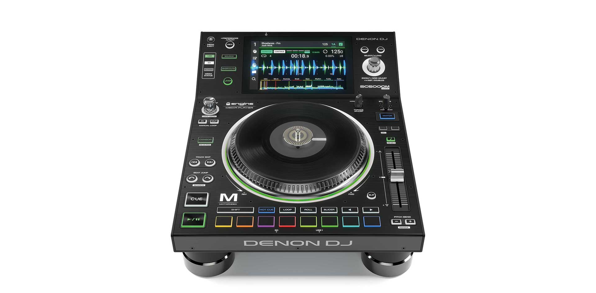

SC5000M Prime – Đầu DJ đĩa động cơ với màn hình 7” cảm ứng đa điểm
Ai đã chạm đến bàn DJ ở phân khúc này thì chắc chắn đã đạt ngưỡng chuyên nghiệp và khắt khe với những chuẩn cầu của mình. Dòng Prime Series đã được Denon DJ nghiên cứu trong thời gian rất dài và là sản phẩm hoàn mỹ nhất đáp ứng mọi yêu cầu của DJ chuyên nghiệp. SC5000M là sự bổ sung mới nhất cho dòng sản phẩm Prime Series của Denon DJ. Công nghệ độc quyền và duy nhất với mâm đĩa động cho trải nghiệm đĩa than vinyl chân thật nhất với DJ. Được xây dựng trên giao diện và phần cứng của công nghệ đã dành nhiều giải thưởng SC5000, ‘M’ nghĩa là ‘Motorised’ đưa DJ trở về cốt lõi của giá trị vinyl đích thực.
Trải nghiệm DJ Vinyl được hoàn toàn định nghĩa lại!
Động cơ điện DC không chổi than, mạnh hơn và có khả năng hơn bất cứ thứ gì trước đây có sẵn trên đầu phát DJ chuyên nghiệp. Hợp thể aluminium trên mâm đĩa đưa ra độ phân giải siêu cao (3600 ticks/ vòng) cho độ chính xác tuyệt đối. SC5000M cũng cho phép điều chỉnh độ ma sát vinyl để kiểm soát slip/scratch giúp cho các DJ có vòng quay cơ học chân thực dưới ngón tay của họ, thực sự làm cho âm nhạc trở nên chân thực hơn bao giờ hết!
Ánh nhìn, rung chạm, trải nghiệm!
SC5000M mang theo mình những công nghệ sáng tạo đột phá từ siêu phẩm SC5000 Prime với màn hình 7” đa cảm biến, đa điểm sáng – công nghê màn hình chạm tân tiến nhất trong toàn ngành DJ. Tìm, lọc, di chuyển trong thư viện nhạc khổng lồ của bạn thật dễ dàng chỉ với thao tác gạt, tap trên màn hình. Đồng thời mọi thông số hiệu suất, sóng nhạc phân giải cao, khuông nhạc beat-grid chuẩn vẫn được phản ánh toàn diện trên màn hình của SC5000M
Thư viện nhạc đa dạng tương thích tất cả phần mềm
Với bộ xử lý đa lõi bên trong thiết bị, SC5000M điều khiển phần mềm Engine Prime cho phép phân tích nguồn nhạc ngay trên thiết bị mà không cần máy tính, cộng với khả năng nhập danh sách nhạc, bài hát, tín hiệu và vòng lặp của Rekordbox. Sử dụng phần mềm quản lý nhạc Prime Engine miễn phí của Denon DJ, các DJ cũng có thể đồng bộ hóa và tích hợp iTunes, Serato DJ Pro và bây giờ cả Traktor của Native Instruments.
Multi-Layers + Sonic Control Excellence
Công nghệ hiệu suất SC5000M mang đến sức mạnh của hai trình chơi nhạc DJ riêng biệt, hai deck nhạc phát cùng lúc trên một đĩa than độc lập. Mix và đuổi nhịp, melody hay giọng đơn với 2 đầu ra kênh độc lập chỉ với một đầu SC5000m. Sáng tạo với Instant-double giữa các kênh hoặc các đầu khác mà không cần phải kết nối máy tính. SC5000M cũng được trang bị các tính năng công nghệ đoạt giải thưởng khác của SC5000, bao gồm thuật toán Timestretch hàng đầu cho các thay đổi nhịp độ cực kỳ quan trọng và khóa tông sắc nét dù cho độ dãn tempo có lớn thế nào đi nữa. Ngoài ra và đương nhiên là 8 pad kích hoạt điều khiển cảm ứng cho việc sử dụng hot-cue, remixing, loop, rolls và slicer.
Quá khứ trở thành tương lai
Sự hấp dẫn của SC5000M Prime chạm đến trái tim của các DJ ở mọi cấp độ kinh nghiệm, tuổi tác và sự tò mò vào bản chất của cảm giác vinyl huyền thoại cũ. Các Top DJ hàng đầu thế giới, Turntablists và các chuyên gia, lãnh đạo ngành công nghiệp DJ đã thực sự phấn khích khi trải nghiệm DJ Vinyl chân thực đã quay trở về.
Thông số kỹ thuật sản phẩm
Âm thanh:Đầu ra Analog: 2,0 Vrms (0 dBFS, 1 kHz)
Dải động: 116 dBĐộ méo (THD + N): <0.0015%
Dải tần số: 22-22.000 Hz
Đầu ra số
Tốc độ lấy mẫu: 96 kHz
Độ sâu Bit: 24 bit
Mâm xoay
Động cơ Brushless DC Electric
Chế độ ly tâm cao: 3.3 kgf/cm (lập tức); 2.8 kgf/cm (cân bằng)
Chế độ ly tâm thấp: 1.6 kgf/cm (lập tức); 1.1 kgf/cm (cân bằng)
Khởi động: 0.5s
Hệ thống phanh
Điện Màn hình chính:7,0 “/ 178 mm (đường chéo)6.0 “x 3.6” / 152 x 91 mm (chiều rộng x chiều cao)
Màn hình LED-backlit full colour với bề mặt cảm ứng
Màn hình trên mâm:2,2 “/ 56 mm (đường kính)
Màn hình LED-backlit đầy màu
10.000.000
Tính năng nổi bật
- Mâm đĩa than 7” cảm giác vinyl chân thực
- Kiểm soát slip/scratch với điều chỉnh độ ma sát vinyl tùy chỉnh
- 2 thiết lập biến mô-men xoăn cao/ thấp
- Màn hình HD 7-inch với cảm ứng cử chỉ đa cảm giác
- Đầu ra âm thanh số 24-bit / 96kHz
- Tích hợp 2 deck với cổng ra âm thanh riêng biệt
- Phát các định dạng âm thanh không nén (FLAC, ALAC, WAV)
- Supports both lossy and lossless audio formats
- Internal onboard analysis of music files
- 8 phím trình diễn đa chức năng cho Cues, Loops, Slicer và Rolls
- Thiết kế cao cấp với vòng đèn quanh mâm tùy chỉnh màu
- (3) USB và (1) đầu vào SD để phát nhạc (input)
- Đầu ra LAN có thể liên kết với 4 bàn khác